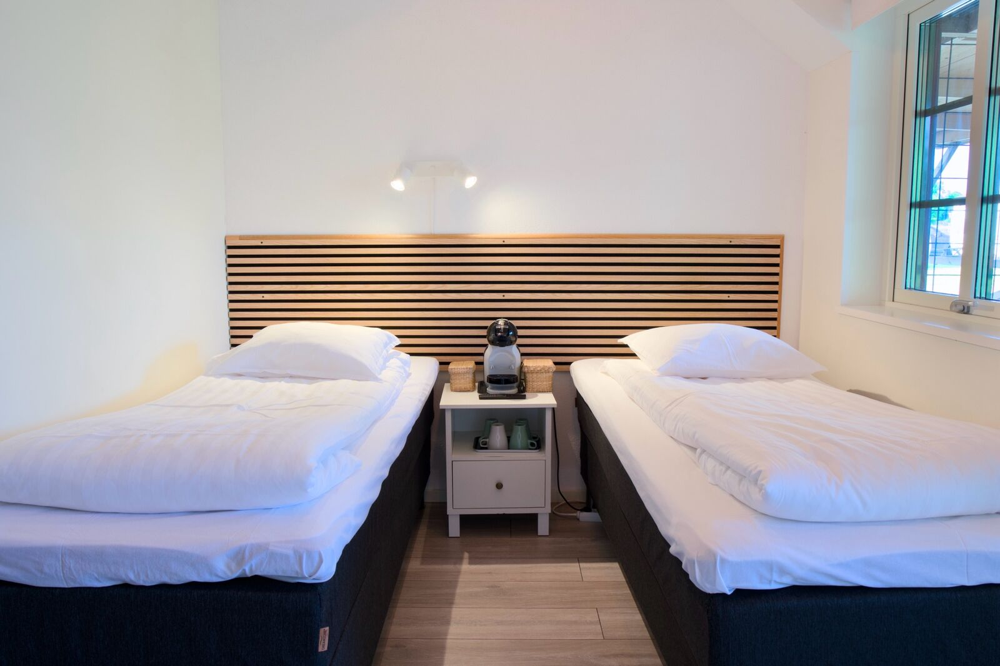

Habitación cuádruple Comfort
Nuestro tipo de habitación más habitual. Cama de matrimonio en la habitación y dos camas individuales arriba, en el altillo.
desde 795 kr / noche

Gammeleksgården Hotel
20 habitaciones de unos 20 m², todas con baño privado y sitio para cuatro. Cada habitación tiene camas abajo y arriba, en un altillo. Los tipos de habitación solo se diferencian en cómo están repartidas las camas.
Precio por noche: 1–2 huéspedes desde 795 kr, 3 huéspedes desde 995 kr y 4 huéspedes desde 1 195 kr. El precio varía según la temporada.
Nuestro tipo de habitación más habitual. Cama de matrimonio en la habitación y dos camas individuales arriba, en el altillo.
desde 795 kr / noche

Dos camas individuales en la habitación y una cama de matrimonio arriba, en el altillo.
desde 795 kr / noche

Cuatro camas individuales, dos en la habitación y dos en el altillo. Ideal para compañeros de trabajo o amigos.
desde 795 kr / noche

Una cama de matrimonio en la habitación y otra en el altillo. Ideal para dos parejas que viajan juntas.
desde 795 kr / noche
Los tipos de habitación en 360°
Las 20 habitaciones tienen el mismo tamaño, baño privado y sitio para cuatro. Lo que cambia es dónde está la cama de matrimonio: abajo, en el altillo, en los dos sitios o en ninguno. Echa un vistazo a una habitación de cada tipo.

Habitación 10 Cama de matrimonio abajo y baño privado. La escalera sube al altillo con cama de matrimonio.
Arrastra la imagen para mirar alrededor. Haz clic en los anillos del suelo para avanzar.
Las fotos de 360° se tomaron en la habitación 10.

Habitación 9 Dos camas individuales abajo y baño privado. La escalera sube al altillo con dos camas individuales.
Arrastra la imagen para mirar alrededor. Haz clic en los anillos del suelo para avanzar.
Las fotos de 360° se tomaron en la habitación 9.

Habitación 7 Cama de matrimonio abajo y baño privado. La escalera sube al altillo con dos camas individuales.
Arrastra la imagen para mirar alrededor. Haz clic en los anillos del suelo para avanzar.
Las fotos de 360° se tomaron en la habitación 7.

Habitación 6 Dos camas individuales abajo y baño privado. La escalera sube al altillo con cama de matrimonio.
Arrastra la imagen para mirar alrededor. Haz clic en los anillos del suelo para avanzar.
Las fotos de 360° se tomaron en la habitación 6.
Incluido en todas las habitaciones
Bueno saber
Check-in desde las 17 y check-out hasta las 11. A veces se puede llegar antes, pero no podemos prometerlo, así que pregúntanos sin problema. La llave la recoges en la recepción: toca el timbre y vendrá nuestro personal, que vive en la finca y normalmente atiende en horario 08–22. Si llegas más tarde, llámanos o escríbenos antes y lo organizamos. Al hacer el check-out, deja la llave en el buzón de devolución de llaves.
Ahora mismo no servimos desayuno, pero suele haberlo en verano. En la cocina común puedes prepararte la comida y guardar cosas en la nevera, las 24 horas.
No se admiten mascotas en las habitaciones del hotel.
Solo se puede fumar en el lugar indicado, lejos de las ventanas y los conductos de ventilación de la casa.
Más preguntas frecuentes
¿Vienes en autocaravana?
Aparca tu autocaravana en la finca y usa la ducha, el aseo y la cocina del hotel. Desde 250 kr por día.
Sobre el área de autocaravanas